How to create a function archive with eclipse

Topic content
This section gives a step-by-step description of how to create a function archive with eclipse and use it in Orchestra.
With message mappings you have the possibility to import a self-created JAR-file as a message prototype and therefore use it as many times as you want.
1.Create a new Java-project in eclipse:
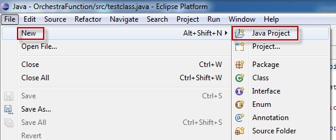
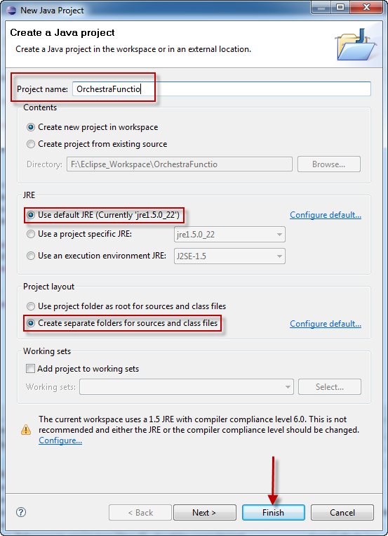
2.Create a Java test class
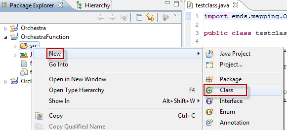
3.Implement the Java class
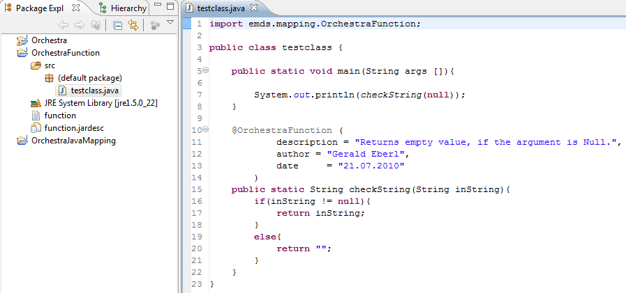
4.Adjust the build-path. This makes it possible to import classes from Orchestra. You should use
import emds.mapping.OrchestraFunction
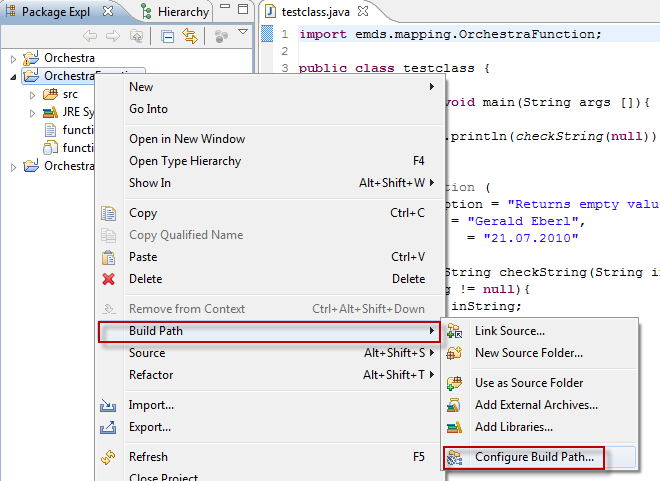
5.Include the Orchestra classes by using the tab "Libraries" and then clicking on the button "Add External Folder". For compiling, Java 1.5.0 is necessary.
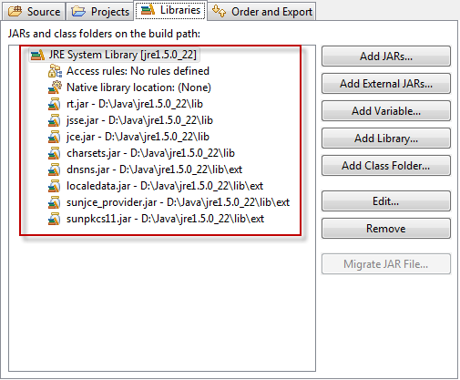
6.Select the Java compiler
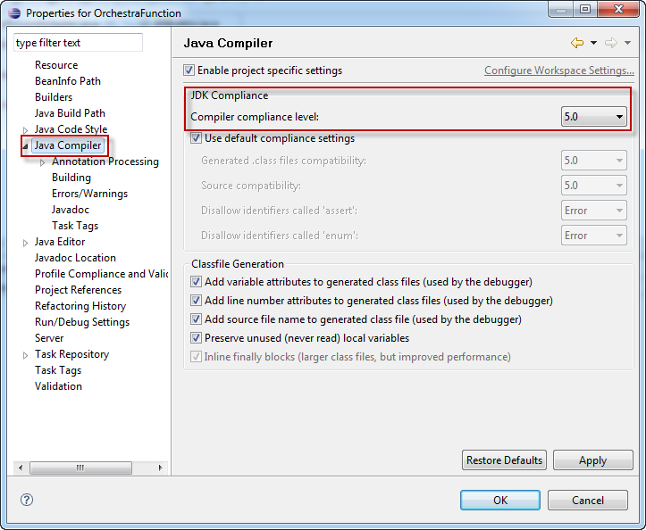
7.Export the JAR-file
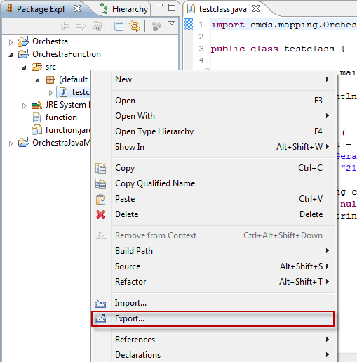
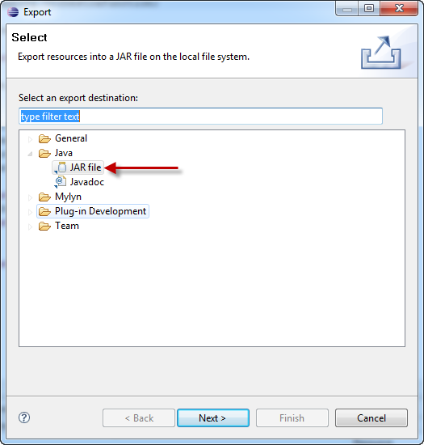
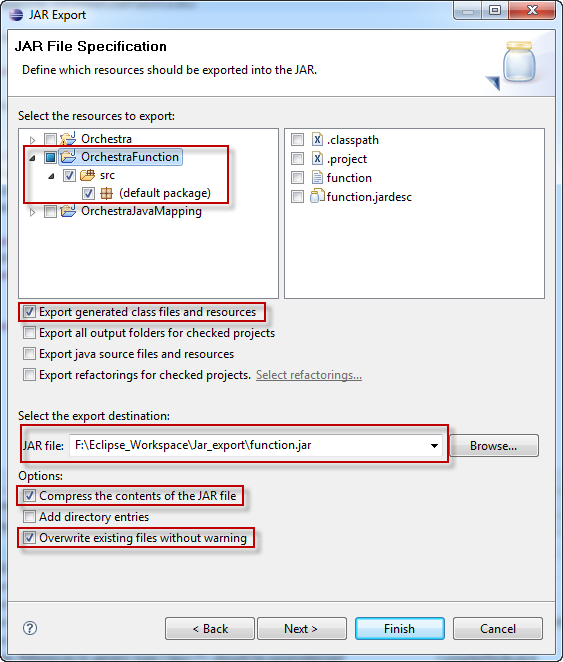
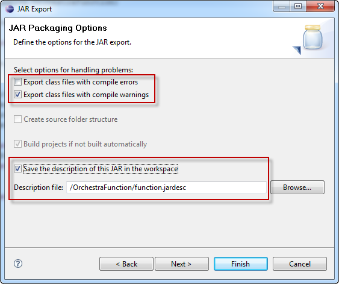
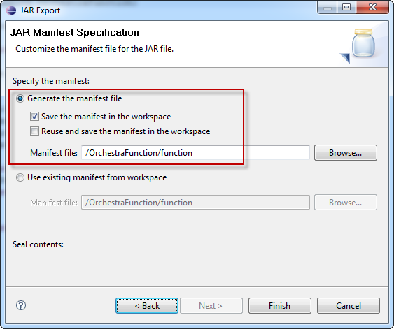
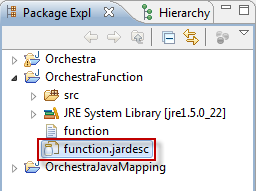
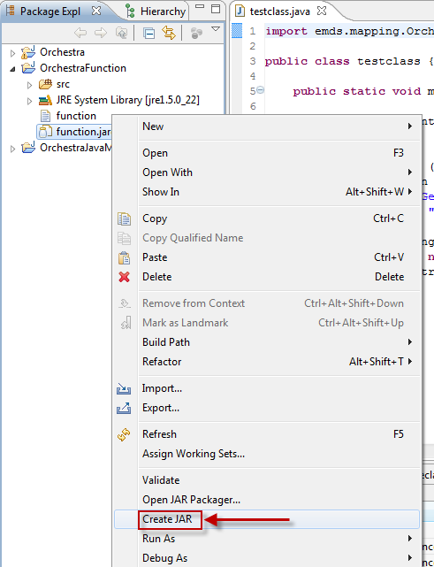
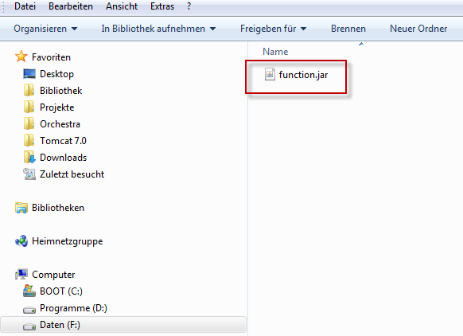
8.Include the JAR-file in Orchestra
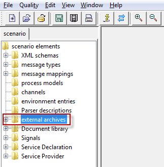
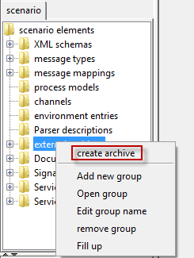
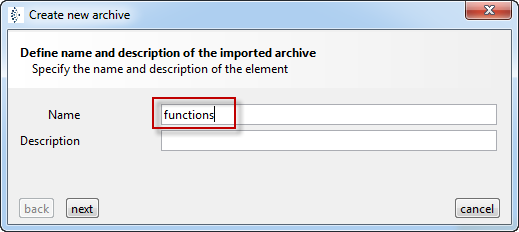
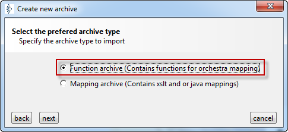
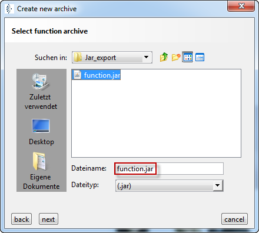
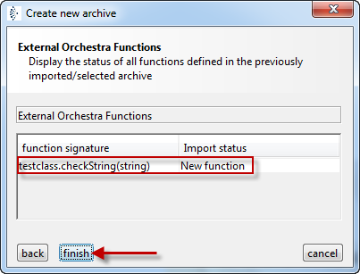
9.For selecting, click on the created prototype. Another click into the working surface adds it to the message mapping.
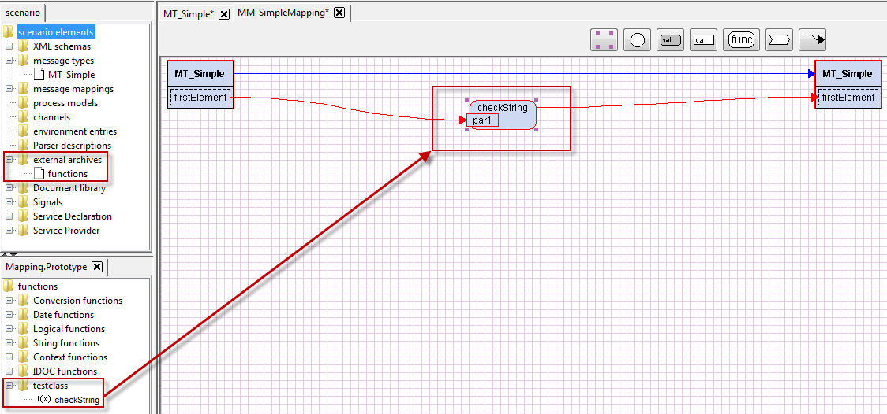
10.It is also possible to use the created function in a Java outbound channel
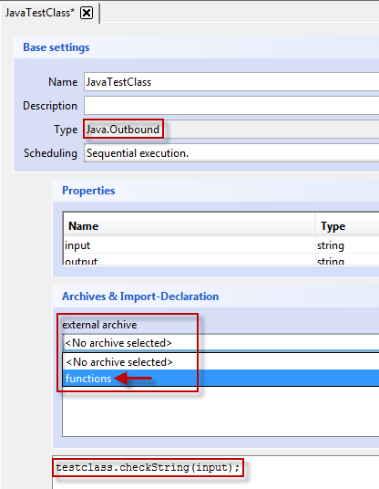
Notice: It is only possible to hand over one file to a Java outbound channel. If more than one JAR should be added as an "External Archive", the separate JARs have to be converted to ZIP-files and extracted. Afterwards, the extracted directories have to be packed to a ZIP-file with the ending .jar. Hence, you have access to all needed classes in the channel.